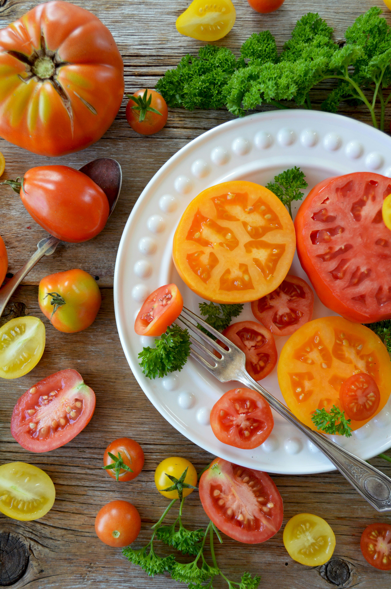

Fruits and vegetables are nature's gifts to us, offering an incredible array of flavors, textures, and vibrant colors. Packed with essential vitamins, minerals, and dietary fiber, these edible wonders play a crucial role in maintaining a healthy and balanced diet. In this website, we will explore the benefits of incorporating fruits and vegetables into our daily lives, highlighting their nutritional value, variety, and the numerous ways they can be enjoyed.
Fruits and vegetables are nutritional powerhouses, providing us with a wide range of essential nutrients. They are excellent sources of vitamins such as vitamin C, vitamin A, and folate, which support our immune system, vision health, and cell growth. Moreover, they are rich in minerals like potassium, magnesium, and calcium, vital for maintaining proper bodily functions and strong bones. The diverse nutrient profiles of fruits and vegetables make them a cornerstone of a well-balanced diet.
One of the most remarkable aspects of fruits and vegetables is their vibrant colors, which are not only visually appealing but also indicative of their nutritional content. Each hue represents a unique set of phytochemicals and antioxidants that contribute to our overall health. For instance, red fruits and vegetables like tomatoes and watermelons contain lycopene, known for its potential anti-cancer properties. Leafy greens like spinach and kale are rich in chlorophyll and lutein, which promote eye health. By consuming a variety of colors, we can ensure we get a wide array of health benefits.
Fruits and vegetables offer endless possibilities in the culinary world. From refreshing summer salads to hearty winter soups, they can be incorporated into every meal. Fruits can be enjoyed fresh, blended into smoothies, or added to desserts for a touch of natural sweetness. Vegetables can be steamed, stir-fried, roasted, or grilled to create delicious side dishes or main courses. The versatility of fruits and vegetables allows us to experiment with different flavors and textures while reaping their nutritional rewards.
Regular consumption of fruits and vegetables has been linked to numerous health benefits. Their high fiber content aids in digestion, helps maintain a healthy weight, and reduces the risk of chronic conditions such as heart disease, type 2 diabetes, and certain types of cancer. Additionally, the antioxidants present in fruits and vegetables help combat oxidative stress and inflammation in the body, contributing to overall well-being and longevity.
Choosing fruits and vegetables also supports sustainable food systems. They have a lower carbon footprint compared to animal-based products, requiring fewer resources and producing fewer greenhouse gas emissions. By incorporating more plant-based meals into our diet, we can contribute to the preservation of our planet and its resources for future generations.
Do you want to know some fun facts about fruits and vegitables?